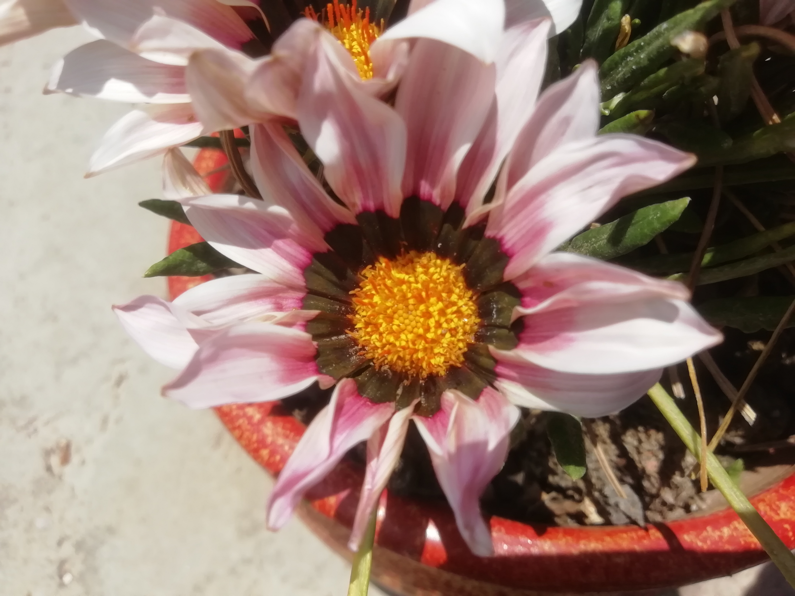
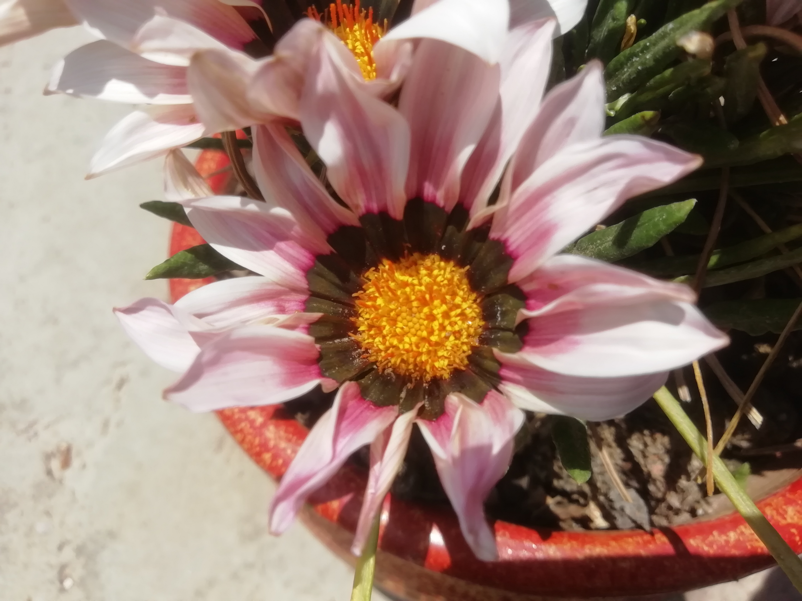

Bienvenido a esta página donde estaré mostrando mis plantas que tengo en mi jardín, les voy a poner nombres de acuerdo a su apariencia asi que no te sorprendas, además recibirá la siguiente clasificación:
Los petalos de esta flor se extiende al recibir los rayos del sol.

 
